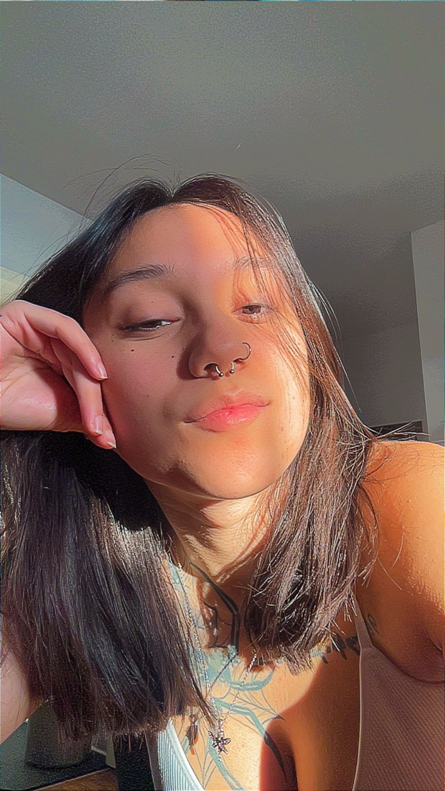

About Me
I originally applied to the Graphic Design program back in 2022 purely out of curiosity and a love for designing. I didn’t end up doing well and only completed one semester. In 2024 I knew I wanted to finally complete a program all the way through, so I reapplied and am doing so much better this time around. I am even more inspired and in love with the program. The only thing that has changed from when I first applied in 2022, is my grades, which are SO much better, and I am incredibly proud of myself after looking and reflecting my previous grades. At this point my strongest asset as a designer is my sharp eyes, I notice very tiny details that older Graphic Designers may look over. I will continue to bring this asset into the industry with me.
"You don't have to be great to start, but you have to start to be great."Anonymous
My Skills
- Sharp eyes
- Computer Graphics
- Adobe Illustrator
- Adobe InDesign
- Adobe Photoshop
- Logo Production
Graphic Design Courses
- Computer Graphics
- Typography
- Graphic Design
- Concept Sketching
- Web Design
- Communications for Graphic Design